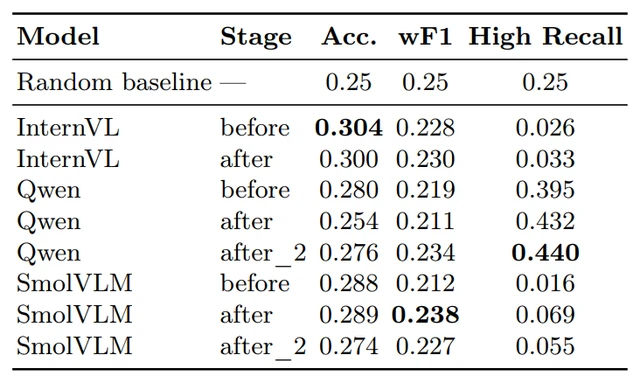
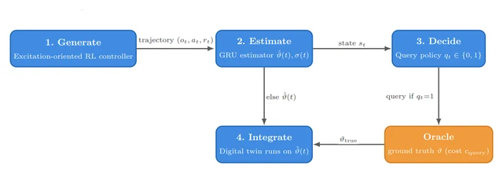

News
- [Aug 2026]: My students' papers were accepted to EMR and CDEL workshops at ECCV 2026!
- [Jul 2026]: My PhD defense committee is officially announced!
- [Apr 2026]: I presented my HRI paper at COMETE Workshop at UniTo!
- [Feb 2026]: I joined AIRlab as a visiting PhD student to work on assistive and helpful HRI in Torino!
- [Feb 2026]: MoIRA has been accepted to Neurocomputing!
- [Dec 2025]: EED Gym was accepted to HRI 2026!
- [Sep 2025]: Gave a talk and joined a panel at AI & BigData Day 2025.
- [Jul 2025]: Released two of our preprints: MoIRA and TD-MPC-Opt!
- [Jun 2025]: Gave a talk about my AAMAS work at RL Reading Club, University of Southampton!
- [May 2025]: Presented a poster on knowledge-based MBRL distillation at AAMAS 2025!
- [Oct 2023]: Started PhD in Computer Science at NaUKMA, advised by Dr. Nadiya Shvai.
Selected Publications

Can Vision-Language Models Assess Proxemic Risk from Egocentric Robot Images?
EMR Workshop at the European Conference on Computer Vision (ECCV), 2026

Trajectory Design and Budgeted Querying for Digital Twin Calibration
CDEL Workshop at the European Conference on Computer Vision (ECCV), 2026

MoIRA: Modular Instruction Routing Architecture for Multi-Task Robotics
Neurocomputing, 2026

When Robots Say No: The Empathic Ethical Disobedience Benchmark
ACM/IEEE International Conference on Human-Robot Interaction (HRI), 2026

TD-MPC-Opt — Distillation & Quantization for Efficient Multi-Task Model-Based RL
Preprint (under review), 2025
Academic Service
- Reviewer, CDEL @ ECCV 2026
- Reviewer, Behaviour and Information Technology
- PC Member, ICTERI 2026
- Reviewer, ICSR 2026
- Reviewer, HRI 2026
- Reviewer, Journal of Field Robotics
Teaching
Senior Lecturer, NaUKMA
13 undergraduate theses supervised
Courses:
- MSc Reinforcement Learning (Spring '23-'25)
- MSc Machine Learning (Fall '22-'23; Spring '25-'26)
- MSc Image Analysis & Computer Vision (Spring '24-'26)
- MSc NLP Systems (Fall '24-'25)
- MSc Computer Vision (Fall '22-'25)
- BSc Machine Learning (Fall '24-'25)
- BSc Deep Learning for Computer Vision (Spring '24-'26)